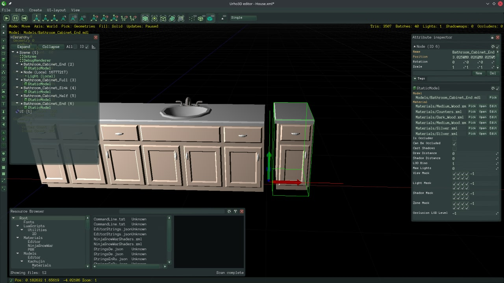
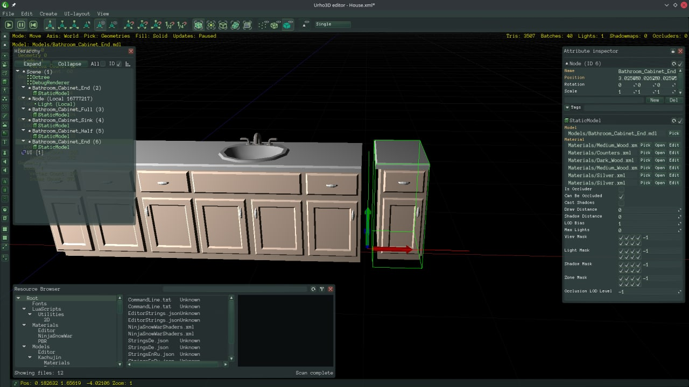

niansa
Hey, how do I mirror an object in the Urho Editor?

Thanks
Tuxifan

Hey, how do I mirror an object in the Urho Editor?

Thanks
Tuxifan

Set scale -1 on the axis?

I only want to warn you that scale=-1 isn’t guaranteed to work consistently everywhere. E.g. it will flip the visuals just fine, but it may break physic collider of the model, or navigation, or something else.
Some things will work just fine, but keep an eye out.
What would the solution be in this case?

Simply use more than one node for the object.
Also, welcome.


Navigation should work, provided that physics works as well since navigation tries to pull box, tri-mesh, and convex-hull physics shape geometry when possible as those SHOULD be faster to voxelize (it was a pretty massive speed up during testing, fewer triangles to process == good, should also be more accurate as to the consequences physics cause for navigation). Edit: not sure if it was @scorvi or @JTippetts1 that wrote it, it wasn’t me. I did test it enough for basic cases.
Physics SHOULD be stuff internal bullet if anything doesn’t work … I think? I don’t see anything that looks ignored as far as setLocalScaling goes and so on. I wouldn’t be surprised if btAdjustInternalEdgeContacts doesn’t work correctly for scaled trimeshes or so on … I can barely read that function, it’s written in problem-domain-expertise.